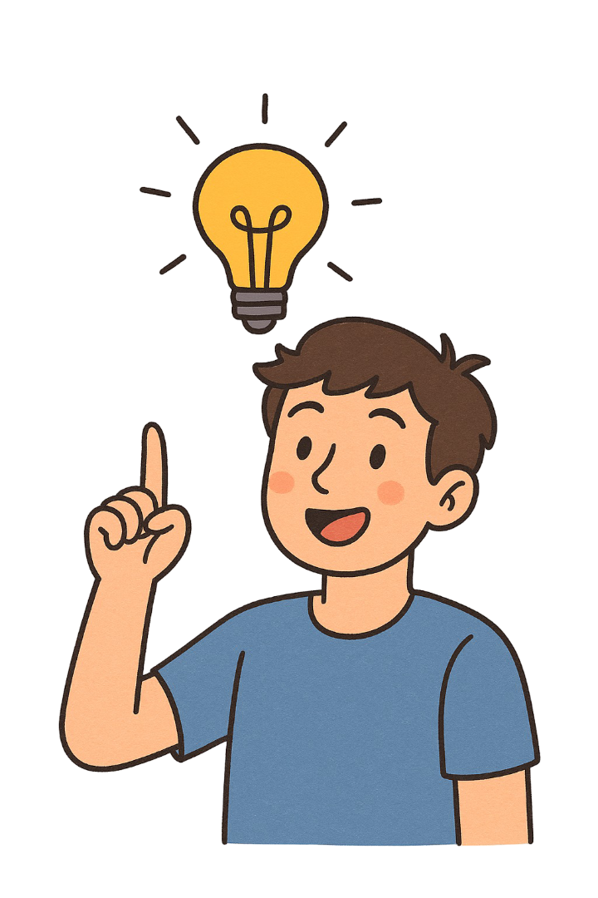

Mes Projets
Projet à venir
BirthRemind cette application permet d’enregistrer facilement les dates d’anniversaire et de recevoir un rappel la veille et le jour J — sans réseau social et sans encombrer son agenda personnel.
Projet en cours
RideUp est une application communautaire dédiée aux passionnés de moto qui souhaitent rouler en groupe.
Voir le projet🚀
Projet à venir
